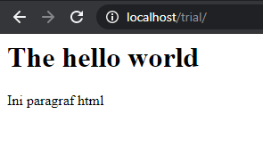

Linux untuk WebServer¶
Linux merupakan salah satu sistem operasi yang paling banyak digunakan untuk server, karena kemampuan enterprise dan biaya yang murah (bahkan gratis). Atas alasan itulah, Linux banyak dijumpai pada berbagai server, baik dalam skala besar maupun kecil. Pada bagian ini akan dilakukan pengaturan Linux untuk webserver
Aplikasi Web Server¶
Sebuah aplikasi webserver berguna untuk mempublikasi file lokal agar dapat diakses melalui jaringan. Sebagai contoh, halaman HTML yang dibuat di komputer belum akan dapat diakses secara luas apabila tidak dipasang pada aplikasi webserver yang dapat mempublikasi data ini. Terdapat banyak aplikasi webserver yang tersedia dengan masing-masing bahasa yang melandasinya. berikut beberapa diantaranya:
Apache
Tomcat
Flask
Django
NodeJS
Nginx
Apache adalah salah satu webserver berbasis PHP yang paling sering digunakan. Cara kerja Apache adalah seperti berikut:
Dengan Apache, maka berkas yang tersimpan pada komputer akan dapat dionlinekan dengan pengaturan tertentu. Pengaturan yang dimaksud meliputi pengaturan keamanan, virtual host, proxy, dan lain sebagainya.
Untuk sekedar menguji kemampuan port forwarding dari WSL2 dan demonstrasi webserver, kita coba buat sebuah webserver sederhana. Python menyediakan sebuah webserver sederhana dengan perintah singkat:
python3 -m http.server
maka folder tempat perintah tersebut dijalankan akan dapat diakses pada browser pada alamat localhost:8000 (port default untuk server ini):

Menggunakan Apache¶
Server web Apache adalah perangkat paling populer saat ini untuk menyajikan konten web di internet. Apache menyumbang lebih dari setengah dari selurh situs web aktif di internet dengan berbagai fungsi dan kelebihan yang dimilikinya. Pada latihan ini akan dilakukan instalasi dan konfigurasi Apache untuk publikasi data dalam bentuk HTML sederhana.
Instalasi Apache¶
Lakukan langkah berikut untuk melakukan instalasi Apache pada sistem Ubuntu WSL:
Update basisdata aplikasi di Ubuntu
sudo apt update
Instalasi Apache2
sudo apt install apache2
Pengaturan firewall. Firewall berfungsi untuk ‘mencegat’ terjadinya transfer data antara sistem lokal dengan jaringan internet. Pengaturan ini diperlukan agar apache diizinkan untuk mengakses port yang diperlukan untuk berkomunikasi dengan dunia luar
sudo ufw allow 'Apache'Selanjutnya periksa status
ufwmenggunakan perintah:sudo ufw status
Apabila keluarannya seperti berikut, artinya port berhasil dibuka:
Output Status: active To Action From -- ------ ---- OpenSSH ALLOW Anywhere Apache ALLOW Anywhere OpenSSH (v6) ALLOW Anywhere (v6) Apache (v6) ALLOW Anywhere (v6)
Jalankan Apache setelah instalasi
sudo service apache2 start
Periksa apakah Apache sudah dijalankan oleh Service
sudo service apache2 status
Apabila status menunjukkan ‘running’, artinya webserver Apache sudah berhasil dijalankan
Buka Apache pada browser pada port 80

Apabila halaman Apache Ubuntu sudah terbuka, artinya instalasi Apache berhasil dengan baik
//### Konfigurasi Apache
Membuat Website sederhana¶
Setelah webserver selesai dipasang, selanjutnya adalah menggunakan webserver ini untuk mempublikasi halaman web dalam bentuk HTML. Apache memiliki direktori default dalam publikasi webnya di folder:
/var/www/html
Dengan demikian, seluruh file yang disimpan pada folder tersebut akan dapat dibuka melalui browser pada alamat localhost.
Untuk menguji webserver ini, kita akan lakukan latihan sebagai berikut:
Masuk ke folder
/var/www/htmlmenggunakan perintahcdBuat sebuah folder baru dengan nama
trialpada direktori/htmltersebut.sudo mkdir trial
Perintah
mkdirpada folder tersebut memerlukan aksessudo, karena owner dari folder adalahroot.Pada folder tersebut, buat sebuah file dengan nama
index.htmlsudo touch index.html
Isilah file tersebut dengan baris bahasa HTML berikut:
<html> <head></head> <body> <h1> The hello world</h1> <p> Ini paragraf html </p> </body> </html>
Buka http://localhost/trial:  File html yang dibuat pada folder berhasil dipanggil pada webserver
Tomcat sebagai Servlet Aplikasi berbasis Java¶
Apache Tomcat adalah implementasi open-source dari Java Servlet, JavaServer Pages, Java Expression Language, dan teknologi Java WebSocket. Ini adalah salah satu aplikasi dan server web yang paling banyak diadopsi di dunia saat ini. Tomcat mudah digunakan dan memiliki ekosistem add-on yang kuat. Apache Tomcat digunakan untuk publikasi berbagai aplikasi geospasial, seperti misalnya Geoserver dan Mapstore.
Instalasi Tomcat¶
Untuk melakukan instalasi Tomcat, lakukan langkah berikut: //https://linuxize.com/post/how-to-install-tomcat-9-on-ubuntu-18-04/
Update apk, kemudian install OpenJDK. OpenJDK diperlukan oleh Tomcat yang berbasis Java untuk dapat dijalankan pada Ubuntu
sudo apt install default-jdk
Atas alasan keamanan, Tomcat tidak boleh dijalankan di bawah pengguna root. Kita perlu membuat pengguna dan grup sistem baru dengan direktori home /opt/tomcat yang akan menjalankan layanan Tomcat:
sudo useradd -r -m -U -d /opt/tomcat -s /bin/false tomcat
Unduh instalasi Tomcat 9. Pada saat penulisan modul ini, Versi terbaru Tomcat adalah 9.0.40. Sesuaikan versi Tomcat yang digunakan dengan melihat versi rilis terbaru pada halaman ini. Gunakan wget untuk mengunduh binary Tomcat untuk Instalasi:
wget http://www-eu.apache.org/dist/tomcat/tomcat-9/v9.0.40/bin/apache-tomcat-9.0.40.tar.gz -P /tmp
Setelah unduhan selesai, gunakan perintah berikut untuk mengekstrak dan memindah file Tomcat pada folder
/opt/tomcat:sudo tar xf /tmp/apache-tomcat-9*.tar.gz -C /opt/tomcat
Untuk keperluan praktis, lebih baik apabila dibuat sebuah Symbolic Link untuk mengacu pada binary yang dimaksud:
sudo ln -s /opt/tomcat/apache-tomcat-9.0.40 /opt/tomcat/latest
Agar folder tomcat dimiliki oleh pengguna
tomcatyang telah dibuat sebelumnya, gunakan perintah berikut:sudo chown -RH tomcat: /opt/tomcat/latest
Demikian pula, rubah pengaturan akses pada script yang ada di dalamnya agar dapat dieksekusi:
sudo sh -c 'chmod +x /opt/tomcat/latest/bin/*.sh'Untuk memudahkan manajemen, Tomcat perlu dijalankan sebagai service:
sudo nano /etc/systemd/system/tomcat.service
masukkan baris berikut pada file yang dibuka:
[Unit] Description=Tomcat 9 servlet container After=network.target [Service] Type=forking User=tomcat Group=tomcat Environment="JAVA_HOME=/usr/lib/jvm/default-java" Environment="JAVA_OPTS=-Djava.security.egd=file:///dev/urandom -Djava.awt.headless=true" Environment="CATALINA_BASE=/opt/tomcat/latest" Environment="CATALINA_HOME=/opt/tomcat/latest" Environment="CATALINA_PID=/opt/tomcat/latest/temp/tomcat.pid" Environment="CATALINA_OPTS=-Xms512M -Xmx1024M -server -XX:+UseParallelGC" ExecStart=/opt/tomcat/latest/bin/startup.sh ExecStop=/opt/tomcat/latest/bin/shutdown.sh [Install] WantedBy=multi-user.target
Lakukan aktivasi untuk Tomcat yang sudah diinstall:
sudo systemctl daemon-reload sudo systemctl start tomcat sudo systemctl status tomcat
Aktifkan tomcat pada saat mesin dimulai:
sudo systemctl enable tomcatIzinkan Firewall untuk Tomcat Sama seperti pada Apache, firewall perlu dibuka untuk mengizinkan Tomcat dapat diakses:
sudo ufw allow 8080/tcp
Pada WSL, terdapat beberapa bug yang mempengaruhi layanan service untuk Tomcat, sehingga penggunaannya memerlukan pengaturan lebih lanjut yang akan dibahas kemudian.